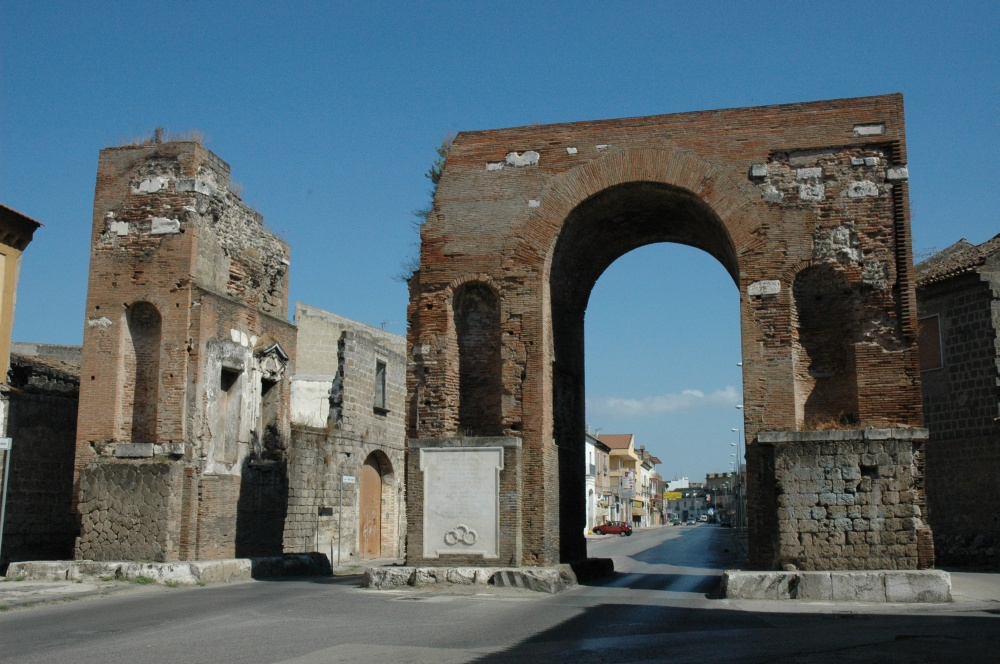

Città dalle antiche origini, erede di un importante patrimonio culturale, storico e archeologico. L'attuale Capua, situata sulle rive del Volturno, corrisponde all'antica zona portuale della Capua del II secolo a.C. fondata in epoca Osca nel VI-V secolo a.C nel II secolo a.C sotto i romani Capua grazie alla sua espansione e grazie alle ricchezze che essa produceva raggiunge il punto di massimo splendore al punto di essere nominata "seconda Roma" .
Alcune fra le tradizioni più importanti sono arrivate fino ai giorni nostri. Ad esempio, Capua è conosciuta per i suoi unguenti; infatti, l'attuale Piazza Mazzini era l'antico quartiere noto come Seplasia, così nominato dal latino seplasiarius (produttore di profumi) e seplasiarium (bottega di profumi). Un'altra importantissima tradizione è il Carnevale Capuano, uno fra i più antichi: si festeggia da ben 140 anni. Esso è caratterizzato,a differenza digli alti carnevali, dal re carnevale. Piatti tradizionali del carnevale capuano sono le lasagne e il sanguinaccio.
Il monumento simbolo di Capua è l'Anfiteatro Campano, secondo per dimensione solo al colosseo. Le condotte sotterranee sono ancora oggi tra le meglio conservate al mondo. Oltre a questo magnifico reperto, nel Museo Archeologico Nazionale dell’Antica Capua ritroviamo le Matres Matutae sculture in tufo simbolo della fertilità è il reperto più antico che si ha su Capua. Infine insieme del colosseo dell epoca Romana ritroviamo l' arco di Adriano. Adriano lo fa costruire li per vari motivi,uno dei motivi è che Adriano da grande amante della città di Capua decide di far costruire un glorioso arco in sengno di gratidutine verso la città, era però questo anche un motivo di propaganda infatti l' arco è stato costruito sulla via Appia la strada più trafficata ai tempi dell' antica Roma in modo che tutti potessero vedere la maestosità e il potere di Adriano.

L'imponente Arco di Adriano, varco trionfale verso l'antica Capua.
Foto di Stanley-buona velocità (2005) - Tratta da Wikipedia
Capua ha un economia basata su qualità che si porta fin dall' epoca Romana, la produzione di creme e profumi, Capua infatti dalle campagne fertili che la circondano riesce a produrre la maggior parte degli unguenti a km 0. inoltre un' altra fonte di reddito è il turismo. Folle ogni anno invadono Capua per visitare i reperti archeologici ma sopratutto per partecipare al carnevale Capuano